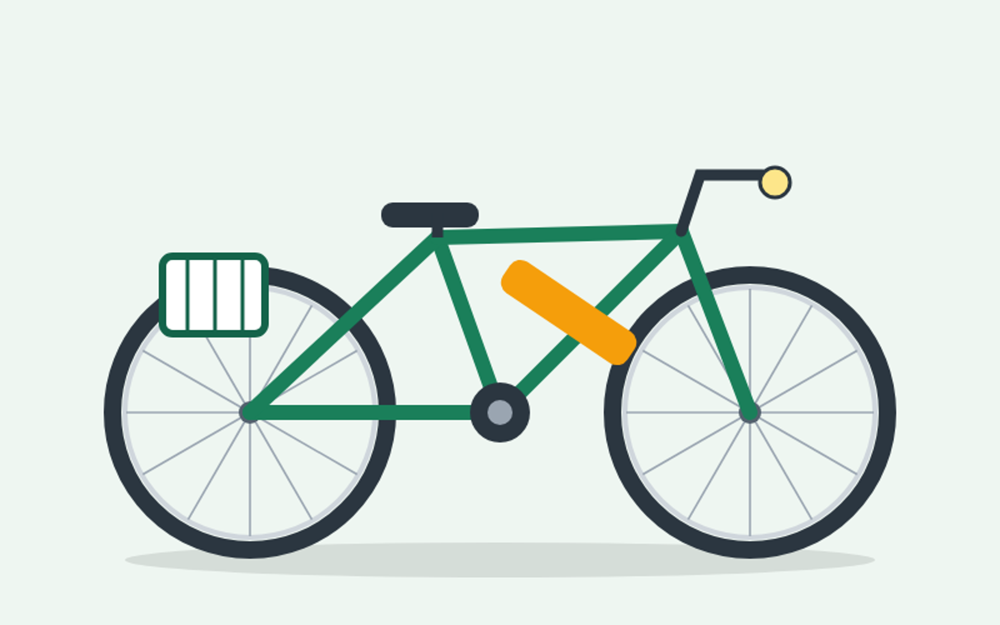
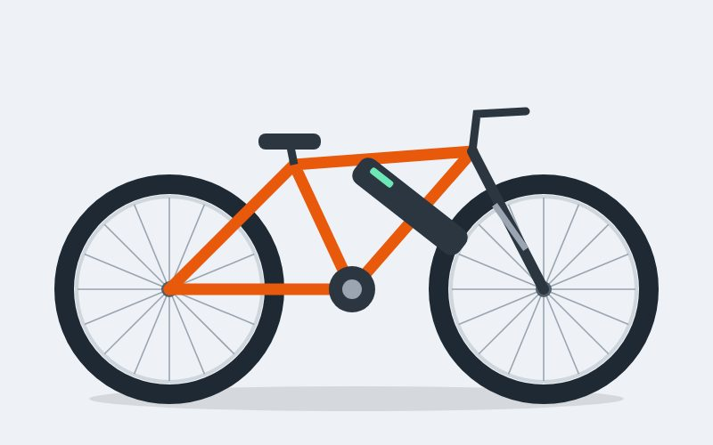
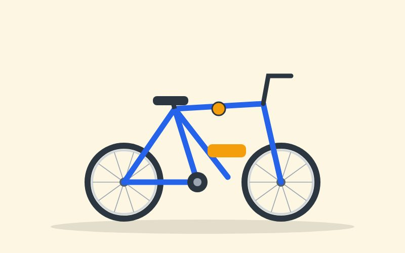
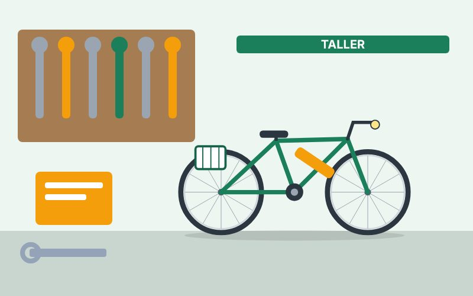

Servicios
Todo lo que necesitas para moverte en bici, en un solo sitio.
1. Alquiler de bicicletas eléctricas
Elige entre tres modelos y alquílala por horas, por días o por fin de semana. Incluye casco, candado y cargador de viaje.
Modelos :
- Urbana: cómoda y con cesta, ideal para la ciudad. Autonomía aproximada: 70 km.
- Montaña: ruedas anchas y suspensión, para caminos de tierra. Autonomía aproximada: 60 km.
- Plegable: ligera y fácil de guardar, para combinar con el tren. Autonomía aproximada: 45 km.



2. Taller y reparaciones
Reparamos cualquier bicicleta, sea eléctrica o no.
Incluye :
- Cambio de cámara y cubierta
- Ajuste de frenos y cambios
- Centrado de ruedas
- Engrase y limpieza de la transmisión

3. Revisión de batería y motor
Comprobamos el estado de la batería, el motor y la electrónica de tu bici eléctrica y te entregamos un informe.
Pasos de la revisión :
- Comprobación visual y de conexiones.
- Medición de la capacidad de la batería.
- Prueba del motor con carga.
- Entrega del informe y recomendaciones.
4. Rutas guiadas (fines de semana)
Salimos en grupo por caminos tranquilos de los alrededores de Getafe. Grupos de hasta 8 personas. Consulta las fechas en la tienda.
Glosario del cliente :
- Autonomía :
- kilómetros que recorre la bici con la batería completa.
- Pedaleo asistido :
- el motor ayuda mientras pedaleas y se desconecta al dejar de pedalear.
- Batería :
- depósito de energía de la bici eléctrica; se recarga en un enchufe normal.